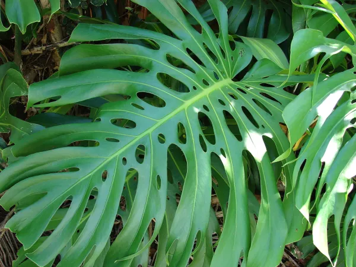
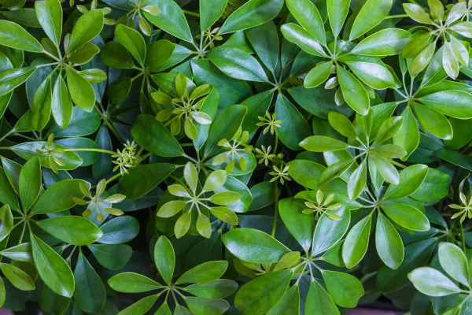
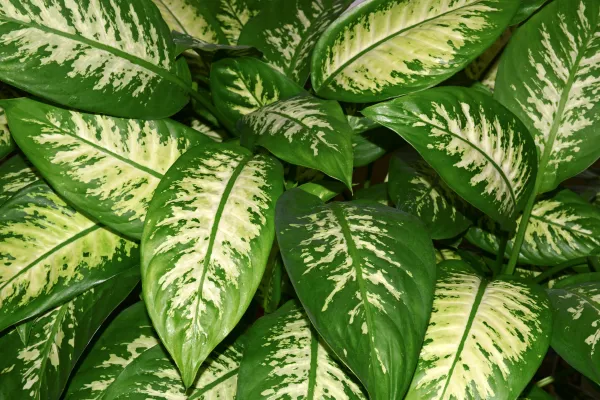
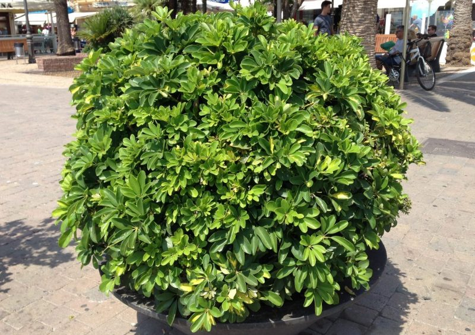

Descripcion de la Planta

Monstera adansonii
Es una especie de hojas pequeñas al principio, de 10 centímetros, pero cuando madura sus hojas pueden llegar a crecer más de 30 centímetros.
Es trepadora y las hojas tienen muchos agujeros de tamaño mediano y de forma redondeada.
Estas fenestras aparecen en cuanto la hoja nueva brota.
Otros tipos de plantas

Planta Paraguas

Diefembaquia
Caracteristicas de la planta
Monstera adansonii
Si eres usuario recurrente de redes como Instagram o Pinterest habrás notado su presencia. La monstera Adansonii ha colonizado las redes sociales, descolocando a muchos por la singular y familiar forma de sus hojas. ¿Es una monstera, no lo es? La pregunta es perfectamente lógica. Identificar una monstera deliciosa es sencillo para casi cualquier amante de las plantas.
Sin embargo, la singular forma de las hojas de la monstera adansonii despista. Por eso queremos descubrirla un poco más a fondo para que te pase lo mismo que a cualquiera: que te enamores perdidamente de ella.
4 TIPS PARA CONOCER MEJOR LA MONSTERA ADANSONII
- Las hojas, la principal diferencia de la monstera Adansonii
- De menor envergadura que la monstera deliciosa
- También es una planta trepadora
- Perfecta para cocinas y baños
Planta Paraguas

- Planta herbácea perenne, cespitosa, con los tallos de sección triangular,
generalmente de poco más de medio metro de altura, pero a veces lo rebasan ampliamente.
- Propia de márgenes de ríos y cursos de agua, utilizada con frecuencia en jardinería para acompañar estanques,
y que se usa también en decoración interior.
- Temperaturas: preferentemente en zonas cálidas, donde las temperaturas invernales no sean demasiado extremas y durante el día,
en la estación fría no baje de 8°C